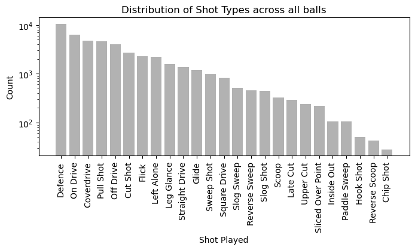
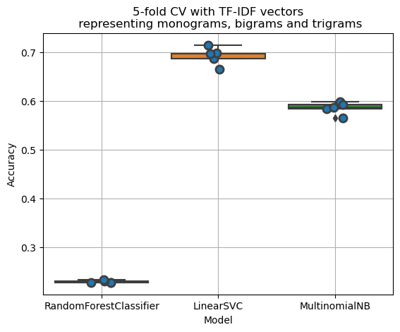
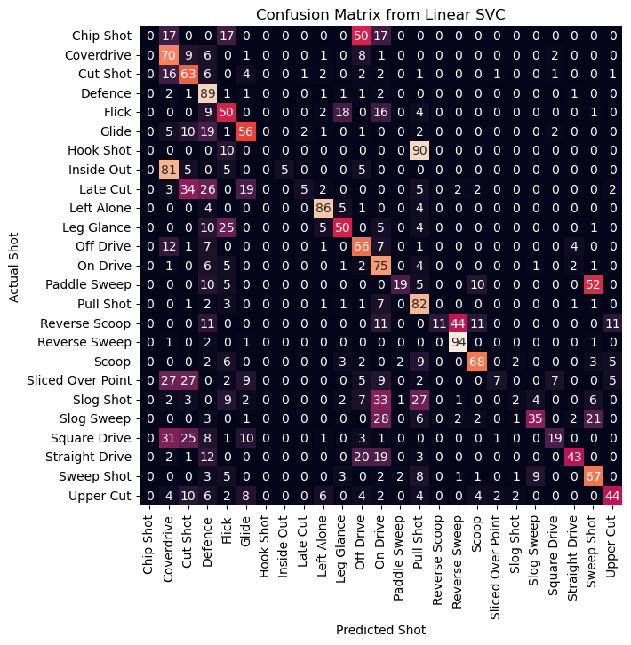

143.1ks, much fuller and snaking in to hit the pad from round the stumps, the sharp angle and movement was dragging it down the leg side. The result is a leg-bye for RR
Shot: On Drive
---
140.8ks, nice and full, seaming in to attack the stumps, whisked away to the right of mid-on
Shot: On Drive
---
good length and slanting in from round the stumps, but does not threaten off stump. So, Jaiswal ignores it in the channel
Shot: Left Alone
---
chipped away in the air...but lands in front of square leg or rather short midwicket where Rashid collects it on the bounce
Shot: Flick
---
dug in short an slanting back in to cramp the batter for room, Jaiswal somehow keeps it out
Shot: Cut Shot
---
full and pushed across off, left alone by Buttler
Shot: Left Alone
---
back of a length and skids back into middle and leg, jammed to the leg side off the inner half
Shot: Defence
---
short and wide of off, Buttler latches onto the width and scythes a cut between point and cover for four. Fetch that!
Shot: Cut Shot
---
better from Dayal. Good length and much closer to off stump, draws Buttler into a front-foot defence to short cover
Shot: Defence
---
shorter and into the ribs, Buttler drags a hook behind square on the leg side for one
Shot: Pull Shot
---
short and veering down the leg side, Jaiswal misses out on the pull and wears it on his thigh pad
Shot: Pull ShotIntroduction
While there is a lot of ball-by-ball information like batter, bowler, runs scored, wicket fell, text commentary etc., for all forms of major cricket matches since the mid 2000s, more micro-level information is lacking. For example, an important feature of each ball is the shot played by the batter. Knowing this would allow analysis of performances, risks (runs vs wicket) and other quantifiers categorized by the shot type. We’d also understand trends in shots played over the years, over different players, in different phases of a match and in different match types.
While text commentary is largely available, shot played is already available only for a subset of matches - international matches played in India in the recent years, and the recent IPL seasons. In this project, I attempted to train models that can learn and predict shot played from the associated text commentary for each ball.
A few examples
Here are a few examples from the 2022 IPL final between Gujarat Titans and Rajasthan Royals from ESPNCricinfo’s commentary and shot played from IPLT20.com. As you can see, some balls have the shot played explicitly mentioned in the commentary, while some don’t. Some balls have a not-entirely-accurate shot tagged, for example shorter and into the ribs, Buttler drags a hook behind square on the leg side for one has the shot tagged as Pull Shot while Hook Shot would have been more appropriate. So, we go into this project with the understanding that such inaccuracies exist, and any predictions coming out of a model trained on this dataset would carry with it these inaccuracies and caveats.
Here’s the distribution of shot types across all the balls available for training. Defence, On Drive, Coverdrive etc. are the most frequent while Inside Out, Paddle Sweep, Hook Shot, Reverse Sweep and Chip Shot are the rarest.

Evaluation of multiple models
To make some initial inroads into the problem, I evaluated three models on TF-IDF vectorized text commentary with monograms, bigrams and trigrams - Random Forest classifier, Linear SVC and Multinomial Naive Bayes - using a 5-fold cross validation. I chose these three because they can be run fairly quickly to get first impressions. Out of these three, Linear SVC does the best with around 70% accuracy.
I also ran an XGBoost method with a validation set and early stopping. This resulted in an accuracy around 69%, which is very similar to Linear SVC. However, XGBoost takes a longer time to train, so I chose to go ahead with Linear SVC and perform hyperparameter tuning.

Hyperparameter tuning
I chose to go ahead with Linear SVC and performed hyperparameter tuning using GridSearchCV to find the best parameters.
Best Hyperparameters: {'vectorizer__max_features': None, 'vectorizer__min_df': 1, 'vectorizer__ngram_range': (1, 3)}
Best CV Score: 0.7095704763787206
Test Accuracy: 0.7173983389062668The best parameter set is to consider all document frequencies and take monograms, bigrams and trigrams together as the features. However, the gains with not keeping an upper limit on the vocabulary size is very little, so to keep the computation from taking up too much RAM, I chose max_df as 10000.
Linear SVC
Tthe precision, recall values shot types shows that the model performs pretty well on shots that have a lot of support, like Defence, On Drive and Pull Shot. However, some shots have a zero precision/recall - Chip Shot and Hook Shot, and some have very low precision/recall values - Late Cut, Slog Shot and Sliced Over Point.
Accuracy: 0.7026210764750297
Precision: 0.5591104200516839
Recall: 0.44190912927180775| precision | recall | f1-score | support | |
|---|---|---|---|---|
| Chip Shot | 0.00 | 0.00 | 0.00 | 6 |
| Coverdrive | 0.66 | 0.70 | 0.68 | 951 |
| Cut Shot | 0.59 | 0.63 | 0.61 | 542 |
| Defence | 0.80 | 0.89 | 0.84 | 2109 |
| Flick | 0.51 | 0.50 | 0.50 | 462 |
| Glide | 0.57 | 0.56 | 0.57 | 239 |
| Hook Shot | 0.00 | 0.00 | 0.00 | 10 |
| Inside Out | 1.00 | 0.05 | 0.09 | 21 |
| Late Cut | 0.17 | 0.05 | 0.08 | 58 |
| Left Alone | 0.83 | 0.86 | 0.84 | 440 |
| Leg Glance | 0.48 | 0.50 | 0.49 | 315 |
| Off Drive | 0.70 | 0.66 | 0.68 | 817 |
| On Drive | 0.71 | 0.75 | 0.73 | 1258 |
| Paddle Sweep | 0.44 | 0.19 | 0.27 | 21 |
| Pull Shot | 0.79 | 0.82 | 0.80 | 933 |
| Reverse Scoop | 1.00 | 0.11 | 0.20 | 9 |
| Reverse Sweep | 0.89 | 0.94 | 0.91 | 90 |
| Scoop | 0.76 | 0.68 | 0.72 | 65 |
| Sliced Over Point | 0.18 | 0.07 | 0.10 | 44 |
| Slog Shot | 0.12 | 0.02 | 0.04 | 89 |
| Slog Sweep | 0.48 | 0.35 | 0.40 | 104 |
| Square Drive | 0.44 | 0.19 | 0.26 | 166 |
| Straight Drive | 0.56 | 0.43 | 0.49 | 279 |
| Sweep Shot | 0.66 | 0.67 | 0.67 | 195 |
| Upper Cut | 0.64 | 0.44 | 0.52 | 48 |
| accuracy | 0.70 | 0.70 | 0.70 | 0 |
| macro avg | 0.56 | 0.44 | 0.46 | 9271 |
| weighted avg | 0.69 | 0.70 | 0.69 | 9271 |
Confusion matrix
The confusion matrix reveals which shots get categorized as which shots when they are incorrectly identified. We see that Chip Shot gets classified as Off Drive, which isn’t a bad prediction per se. Anyway, it has such a low support that not identifying it correctly is insignificant. Coverdrive is identified correctly 70% of the time, but otherwise its identified as Cut Shot (not bad), Off Drive (not bad), or as Defence (not so good). A couple of other examples are Leg Glance getting identified as Flick (totally fine) 25% of the times, and Square Drive getting identified as Coverdrive (not bad) and Cut Shot (not bad) 56% of the time.
This suggests that even when the shots aren’t identified exactly, the other incorrect guesses are often okay. A lenient accuracy score would score higher than 70%.

This table lists all the shots in order of their frequency in the dataset along with their accuracy values and the second best guesses. In many cases, the second best guess is quite acceptable.
| Test | Train | Correct % | Best Guess | Second Best Guess | |
|---|---|---|---|---|---|
| Defence | 2109 | 8436 | 89.0 | Defence | On Drive |
| On Drive | 1258 | 5029 | 75.4 | On Drive | Defence |
| Coverdrive | 951 | 3806 | 70.2 | Coverdrive | Cut Shot |
| Pull Shot | 933 | 3732 | 81.8 | Pull Shot | On Drive |
| Off Drive | 817 | 3268 | 65.6 | Off Drive | Coverdrive |
| Cut Shot | 542 | 2168 | 63.1 | Cut Shot | Coverdrive |
| Flick | 462 | 1847 | 49.8 | Flick | Leg Glance |
| Left Alone | 440 | 1761 | 85.7 | Left Alone | Leg Glance |
| Leg Glance | 315 | 1258 | 49.5 | Leg Glance | Flick |
| Straight Drive | 279 | 1116 | 42.7 | Straight Drive | Off Drive |
| Glide | 239 | 955 | 56.5 | Glide | Defence |
| Sweep Shot | 195 | 781 | 67.2 | Sweep Shot | Slog Sweep |
| Square Drive | 166 | 662 | 18.7 | Coverdrive | Cut Shot |
| Slog Sweep | 104 | 416 | 34.6 | Slog Sweep | On Drive |
| Reverse Sweep | 90 | 362 | 94.4 | Reverse Sweep | Defence |
| Slog Shot | 89 | 358 | 2.2 | On Drive | Pull Shot |
| Scoop | 65 | 262 | 67.7 | Scoop | Pull Shot |
| Late Cut | 58 | 232 | 5.2 | Cut Shot | Defence |
| Upper Cut | 48 | 190 | 43.8 | Upper Cut | Cut Shot |
| Sliced Over Point | 44 | 178 | 6.8 | Coverdrive | Cut Shot |
| Inside Out | 21 | 86 | 4.8 | Coverdrive | Inside Out |
| Paddle Sweep | 21 | 84 | 19.0 | Sweep Shot | Paddle Sweep |
| Hook Shot | 10 | 40 | 0.0 | Pull Shot | Flick |
| Reverse Scoop | 9 | 34 | 11.1 | Reverse Sweep | Reverse Scoop |
| Chip Shot | 6 | 22 | 0.0 | Off Drive | Flick |
Next steps
Armed with this model, we can now take text commentary for all matches from ESPNCricinfo and predict the shot types. Of course, we have to make sure that the commentary for each ball is not too short, in which case a random shot might be predicted because of incomplete information. Perhaps an idea would be to augment the training set with such examples and have a dummy shot type, so that such data in unseen datasets can be identified correctly.